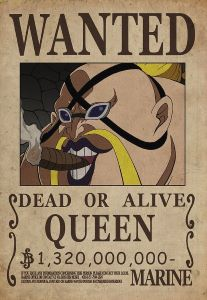

<div class="container">
  <article>
    <h1>Kaido das Cem Feras</h1>
    
    <p>
      Kaido, conhecido como "Kaido das Cem Feras", era um dos Yonkou, os quatro
      imperadores mais poderosos dos mares em One Piece. Seu sonho é iniciar uma
      grande guerra que traga o caos e a destruição ao mundo. Ele é líder do clã
      das bestas e possui uma enorme força física, sendo considerado
      indestrutível. Kaido é conhecido por sua busca incessante pela "guerra
      final", onde deseja encontrar um oponente capaz de derrotá-lo. Ele é
      derrotado pelo Luffy na Ilha de Wano.
    </p>

    <h2>Uo Uo no Mi modelo: Seiryu</h2>
    
    <p>
      É uma Fruta do Diabo do tipo Zoan Mítica, permite ao usuário
      transformar-se em um híbrido ou em uma versão completa de Dragão Azul a
      vontade. O usuário pode usar habilidades e técnicas associadas a dragões,
      como voar, respirar fogo, criar tempestades e outros poderes, as escamas
      do fruto são tão duras que lhe garantem proteção
    </p>
    <h2>Bando Piratas das Feras</h2>
    
    <p>
      Os Piratas das Feras, liderados por Kaido, são uma das mais poderosas e
      temidas tripulações no mundo de "One Piece". Conhecidos por sua
      brutalidade e força avassaladora, eles têm uma reputação de
      invencibilidade no campo de batalha. A tripulação é composta por um grande
      número de membros, muitos dos quais possuem habilidades transformadoras
      graças às Akuma no Mi do tipo Zoan, incluindo as versões artificiais
      conhecidas como SMILEs.
    </p>
    <p>
      A tripulação é altamente organizada com uma estrutura militar clara,
      dividida em várias divisões e unidades especializadas, cada uma
      desempenhando papéis específicos na conquista e manutenção do território.
      Eles controlam a ilha de Wano, um território isolado e estrategicamente
      importante, usando-o como base de operações e fortaleza. Também são
      conhecidos por usar armas avançadas e tecnologia para aumentar seu poder
      de combate, incluindo a criação de armas químicas e biológicas.
      <br />
      <br />
      Seus principais membros são:
    </p>

    <div class="imediatos">
      <div class="calamidades">
        <h3>As Três Calamidades</h3>
        
        
        
      </div>
      <h3>Os Tobiroppos</h3>
      
      
      
      
      
      
    </div>
  </article>
</div>
